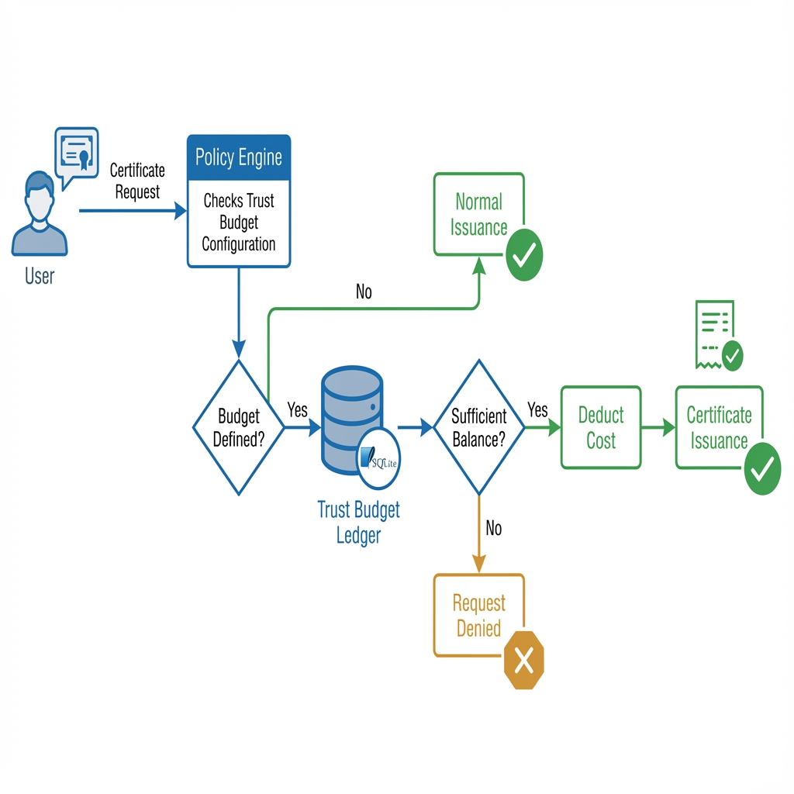

Trust Budgeting
Experimental. Opt-in. Governance primitive. May change or be removed.
Trust Budgeting is a mechanism for limiting cumulative human authority during certificate issuance. It is not a security enforcement tool and does not provide runtime monitoring, attack detection, or access control.
Why Trust Budgeting Exists
In operational environments, privilege accumulation and operational fatigue can lead to excessive certificate issuance over time. Trust Budgeting provides an issuance-time accounting mechanism to limit this accumulation.
- Operational Fatigue — Humans approve requests repeatedly without consideration for cumulative impact.
- Privilege Accumulation — Even well-intentioned users may accrue more access than necessary over time.
- Governance Gaps — Traditional RBAC policies enforce per-request limits but not cumulative limits.
Trust Budgeting addresses these gaps by tracking issuance costs against a finite budget. When the budget is exhausted, further issuance is paused until the budget resets.
How It Works
- Budget Allocation — Each user or group is assigned a budget (e.g., 100 points).
- Cost Deduction — Each certificate issuance deducts a cost (e.g., 1 point) from the budget.
- Exhaustion Handling — When the budget is exhausted, certificate issuance fails with a clear message.
- Reset Cycle — Budgets can be configured to reset at a fixed interval (e.g., every 24 hours).
Issuance Flow
The diagram above shows the issuance-time decision flow:
- If no trust budget is defined in the policy, normal issuance proceeds.
- If a budget is defined, the ledger is consulted atomically.
- Sufficient balance results in cost deduction and certificate issuance.
- Insufficient balance results in a clear denial message.
Configuration
Trust Budgeting is configured in policy.yaml at the rule level:
policies:
- name: Developer
match:
local_usernames: ["*"]
principals: ["user"]
max_duration: "15m"
# Trust Budget (Experimental)
trust_budget:
budget_id: "user:${username}" # Per-user budget
cost: 1 # Cost per issuance
initial_balance: 100 # Starting balance
reset_interval_hours: 24 # Optional reset intervalIf trust_budget is not defined in a policy rule, the feature is completely
disabled for that rule.
Relationship to Break-Glass
Trust Budgeting and Break-Glass are separate, parallel mechanisms:
| Feature | Purpose |
|---|---|
| Trust Budgeting | Limit cumulative issuance via accounting |
| Break-Glass | Emergency issuance path for out-of-policy access |
Trust Budgeting does not block Break-Glass requests. Break-Glass is a separate issuance path with its own audit trail.
Limitations
- No runtime enforcement — Trust Budgeting only applies at issuance time.
- No adaptive scoring — Costs are static and explicit.
- No heuristics or ML — This is a mechanical, predictable accounting system.
- No automatic resets without config — Reset intervals must be explicitly defined.
Audit Trail
All budget transactions are logged to the SQLite database (server/data/trust_budget.db) and
can be queried for audit purposes.